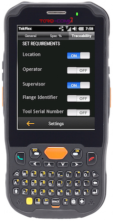
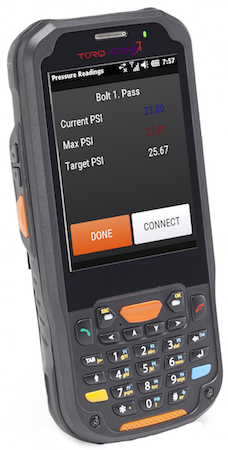
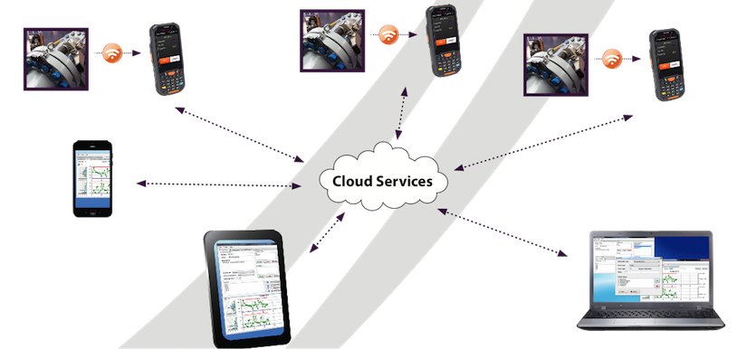

Toggle navigation
About
Products
Distributors
Contact
FAQ
Products
Home
Products

Commander XT1000
Data Collector
Users, roles and privileges uniquely defined (Admin, Supervisor, Operator)
User-defined Traceability
Automatic Traceability info – time stamp, GPS location
User defined Bolt pattern management per ASME PCC-1-2013
3 Operator Modes:
Expert mode - operator defined
Flange mode - parameters defined by pipe size & pressure
Guided mode – parameters defined by bolting parameters and bolt selection
Multiple passes with final check pass option
Supervisor-required overrides option for non-conforming data or out of calibration equipment
Production, Productivity and Repair reports
Contact Us!

Commander XT2000
Precision control of the pump without violating the manufacturer’s warranty.
Remote pressure adjustment of the pump from the handheld device from over 30 ft. away
Connectivity via 2.4 GHz Bluetooth or tethered
Battery operated control board – 1 week operating life on a single charge
Easily swappable rechargeable batteries
Indicator lights to show operation and battery status
Contact Us!

Cloud Storage (or PC)
Collected results can be pushed immediately to a Cloud based server
Reporting Options:
Out of Spec issues – traceability issues, tool
Calibration, assembly data
Flange Assemblies Detail
Map Assembly Location & Drill Down
Operator Performance
Job Status
Management Notifications - email or text
Contact Us!
Options:
Control
Ability to remotely adjust the pressure on the pump through the Commander XT2000 add-on
Adjust either wirelessly or tethered
Cloud
Collects data and sends the results for each bolt to a Cloud server or local PC
Data can be managed and sorted as required by the supervisor
Data can then be viewed, distributed or printed in a variety of formats